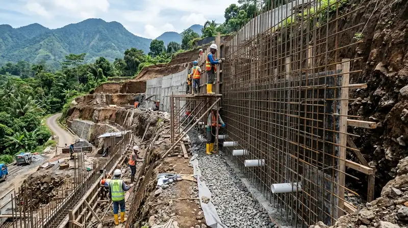

Ringkasan Inti
- Biaya retaining wall umumnya dihitung berdasarkan jenis struktur, volume material, dan tinggi dinding yang dibutuhkan.
- Aksesibilitas lokasi di Batu turut memengaruhi biaya mobilisasi material dan alat konstruksi.
- Sistem drainase tambahan pada retaining wall juga menjadi komponen biaya yang perlu diperhitungkan.
- Perencanaan yang tepat sejak awal dapat membantu mengoptimalkan biaya tanpa mengorbankan keamanan struktural.
Daftar Isi Artikel
- Apa Saja Komponen yang Memengaruhi Biaya Retaining Wall?
- Kenapa Biaya Retaining Wall di Batu Dapat Bervariasi?
- Bagaimana Cara Menghemat Biaya Retaining Wall Tanpa Mengurangi Keamanan Struktural?
- Apa Saja Biaya Tambahan yang Sering Terlewat dalam Perencanaan Retaining Wall?
- FAQ Seputar Biaya Retaining Wall Lahan Kontur Batu
Biaya retaining wall di Batu dipengaruhi jenis struktur, tinggi dinding, dan tingkat kesulitan akses lokasi lahan berkontur yang dibangun. Perencanaan yang matang sejak awal membantu memastikan struktur kokoh menahan tekanan tanah sekaligus menjaga anggaran tetap efisien.
Apa Saja Komponen yang Memengaruhi Biaya Retaining Wall?
Biaya retaining wall dipengaruhi oleh beberapa komponen utama yang saling berkaitan, mulai dari jenis struktur hingga kondisi lahan tempat dinding penahan tanah akan dibangun.
Komponen utama yang memengaruhi biaya:
- Jenis retaining wall yang dipilih, seperti gravity wall, cantilever wall, atau anchored wall dengan tingkat kompleksitas berbeda.
- Volume material yang dibutuhkan, ditentukan oleh tinggi dan panjang dinding penahan tanah yang direncanakan.
- Kebutuhan besi tulangan dan campuran beton sesuai perhitungan struktur dari insinyur atau arsitek.
- Sistem drainase pendukung seperti pipa weep hole dan lapisan kerikil di balik dinding.
- Biaya tenaga kerja dan mobilisasi alat, yang dapat bervariasi tergantung aksesibilitas lokasi proyek di Batu.
Kenapa Biaya Retaining Wall di Batu Dapat Bervariasi?
Biaya retaining wall di Batu dapat bervariasi signifikan tergantung sejumlah faktor lokal yang memengaruhi kompleksitas pekerjaan dan kebutuhan material pada masing-masing lahan.
Faktor yang memengaruhi variasi biaya di Batu:
- Tingkat kemiringan lahan, semakin curam kontur umumnya membutuhkan struktur retaining wall yang lebih kompleks dan mahal.
- Aksesibilitas lokasi untuk alat berat, terutama pada lahan yang berada jauh dari akses jalan utama.
- Kondisi tanah setempat, di mana tanah dengan stabilitas rendah mungkin membutuhkan perkuatan tambahan.
- Jenis material yang dipilih, seperti penggunaan batu alam sebagai elemen estetika dapat menambah biaya dibanding beton polos.

Catatan Arsitek Malang
Jangan pernah menekan anggaran dengan menghilangkan atau memperkecil sistem drainase weep hole di dinding penahan tanah. Penumpukan air hujan di balik dinding menciptakan tekanan hidrostatik masif yang menjadi penyebab utama 80% kegagalan retaining wall pada lereng perbukitan Batu.
Bagaimana Cara Menghemat Biaya Retaining Wall Tanpa Mengurangi Keamanan Struktural?
Menghemat biaya retaining wall dapat dilakukan melalui perencanaan yang cermat sejak tahap desain, tanpa mengorbankan standar keamanan struktural yang diperlukan untuk menahan tekanan tanah.
Strategi yang dapat diterapkan untuk efisiensi biaya:
- Melakukan survei kontur yang akurat untuk menentukan jenis dan dimensi retaining wall yang benar-benar dibutuhkan, menghindari over-desain.
- Memilih jenis retaining wall yang sesuai dengan tingkat kemiringan lahan, tanpa memilih struktur yang lebih kompleks dari kebutuhan aktual.
- Menggunakan material lokal yang tersedia di sekitar Batu untuk mengurangi biaya distribusi material.
- Melibatkan kontraktor berpengalaman menangani lahan berkontur untuk menghindari kesalahan konstruksi yang dapat menambah biaya perbaikan di kemudian hari.
Apa Saja Biaya Tambahan yang Sering Terlewat dalam Perencanaan Retaining Wall?
Beberapa biaya tambahan sering terlewat dalam perencanaan awal retaining wall, sehingga penting untuk memastikan seluruh komponen tercatat dalam RAB sejak awal proyek.
Biaya tambahan yang sering terlewat:
- Biaya sistem drainase pendukung yang sering dianggap terpisah padahal merupakan bagian integral dari struktur retaining wall.
- Biaya perbaikan akses sementara untuk alat berat apabila lokasi proyek sulit dijangkau kendaraan konstruksi standar.
- Biaya pengawasan teknis dari insinyur struktur untuk memastikan pelaksanaan sesuai dengan perhitungan desain.
FAQ Seputar Biaya Retaining Wall Lahan Kontur Batu
Berapa kisaran biaya retaining wall per meter di Batu?
Biaya per meter dapat bervariasi signifikan tergantung jenis struktur, tinggi dinding, dan kondisi lahan, sehingga estimasi akurat memerlukan survei langsung oleh kontraktor atau arsitek berpengalaman.
Apakah retaining wall dari batu alam lebih mahal dibanding beton?
Retaining wall dengan finishing batu alam umumnya lebih mahal dibanding beton polos karena nilai estetika tambahan yang ditawarkan material tersebut.
Apakah biaya retaining wall termasuk dalam RAB total pembangunan rumah?
Retaining wall sebaiknya dimasukkan sebagai pos anggaran terpisah dalam RAB total, mengingat kompleksitas dan biaya yang cukup signifikan pada lahan berkontur.
Biaya retaining wall untuk lahan kontur di Batu dipengaruhi oleh kombinasi jenis struktur, kondisi lahan, dan aksesibilitas lokasi proyek. Perencanaan yang matang bersama arsitek atau kontraktor berpengalaman membantu memastikan biaya retaining wall tetap efisien tanpa mengorbankan keamanan struktural bangunan.
Punya Lahan Berkontur di Batu & Butuh Retaining Wall?
Konsultasikan survei kontur, perhitungan struktur dinding penahan tanah, dan estimasi RAB akurat bersama tim ahli kami.

Naura Regyna Putri
Penulis & Tim Riset Arsitektur Maroon Arsitek Malang, spesialis teknik geoteknik lereng, dinding penahan tanah berkontur Batu, dan manajemen RAB konstruksi.